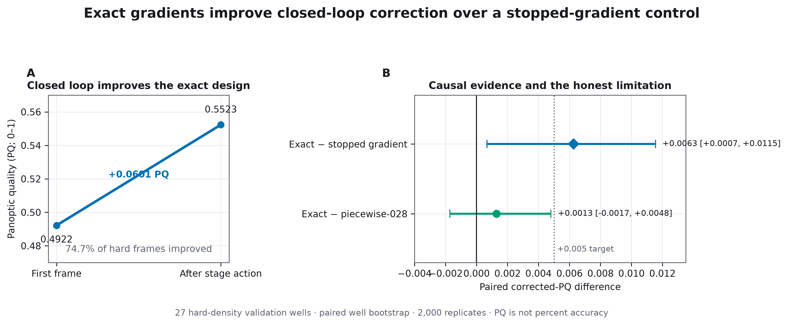
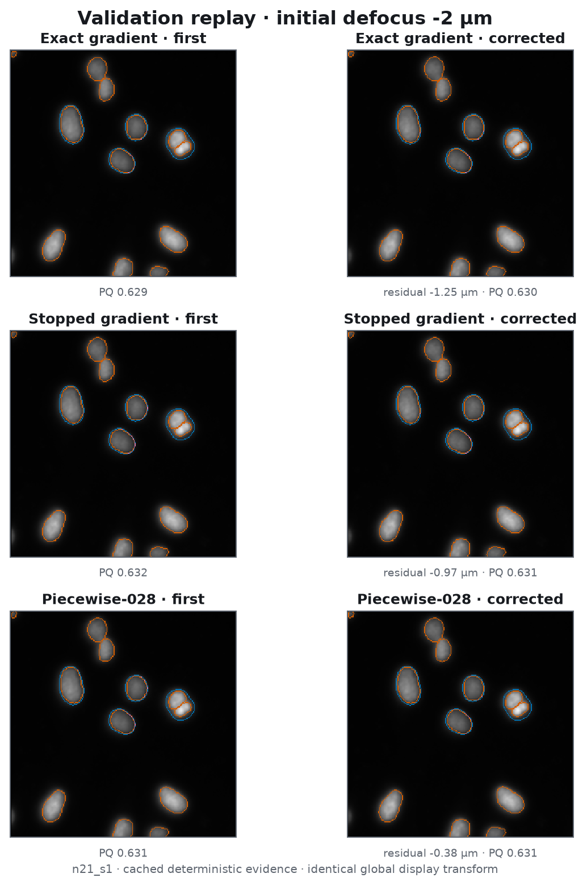
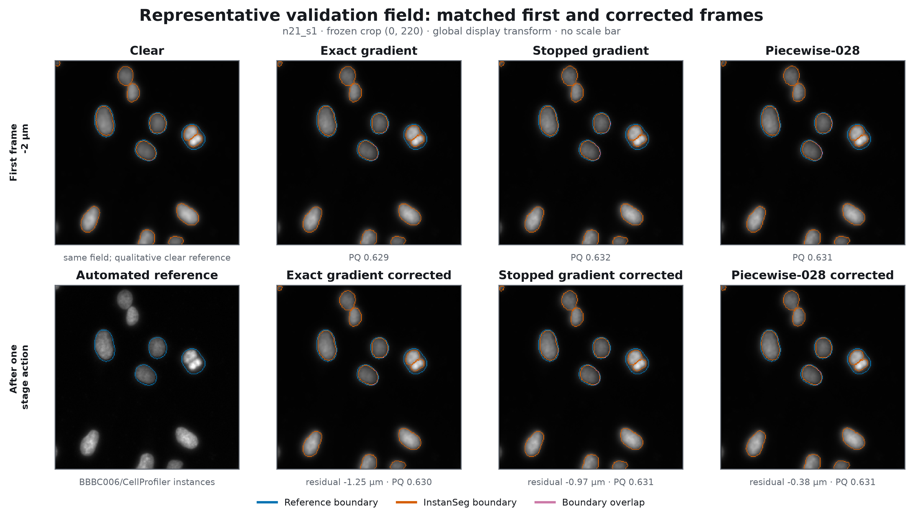
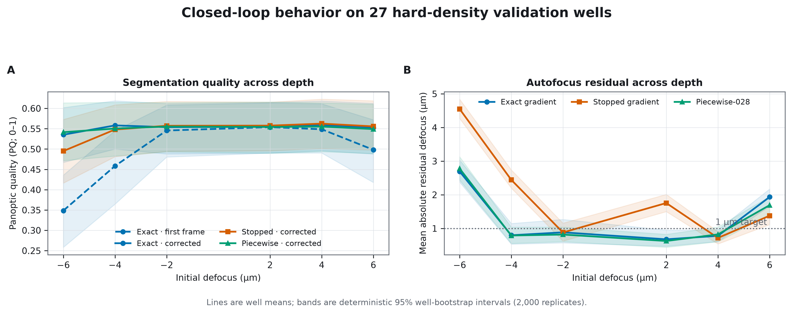
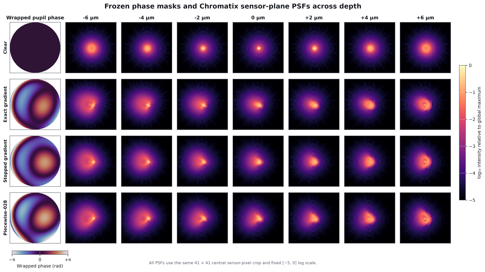
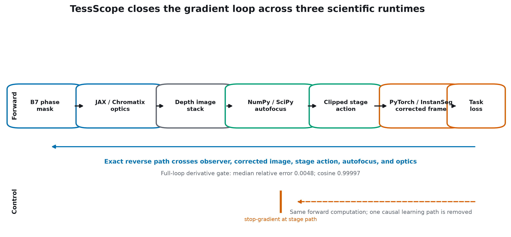

Exact vs stopped
+0.0063 PQ 95% CI +0.0007 to +0.0115Validation-only · cached evidence replay
Exact gradients improve closed-loop microscope correction.
TessScope differentiates across JAX/Chromatix optics, NumPy/SciPy autofocus, and PyTorch/InstanSeg. Against a forward-identical stopped-gradient system, the corrected validation result improves by +0.0063 PQ.
The result, with its boundary
A causal gain—not a claim of universal superiority
PQ means panoptic quality, a 0–1 instance-segmentation metric. It is not percent accuracy.
Exact corrected PQ
0.5523 from 0.4922 before correctionAutofocus
1.27 µm MAE 98.89% signed direction
Same field. Same crop. Same transform.
Step through the closed loop across depth
Cached replay · no computation occurs here

Representative, not hand-picked
The frozen qualitative field
n21_s1 was selected before rendering by minimum robust distance from the 27-field population median over six performance features.

Population behavior
Segmentation and autofocus across defocus

What the mask changes
Physical pupils and PSFs across the full depth grid

The causal mechanism
One gradient loop across three runtimes

What we can—and cannot—say
Scientific limits stay visible
Supported
Exact closed-loop gradients improve corrected validation PQ over the matched stopped-gradient control.
Not supported
Superiority over piecewise-028: its paired interval includes zero and the frozen stability gate failed.
Still sealed
The locked BBBC006 test. V2.5 and v2.6 produced no eligible candidate, so the test was not opened.
Not yet validated
Physical microscope performance. These are deterministic in-silico sensor frames and automated reference labels.
Traceable by construction
Every visual resolves to a source hash
The evidence, selection, array, figure, and site manifests record source paths, JSON pointers, crop origins, design identities, transforms, and SHA-256 hashes.